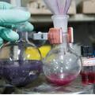

基本信息
作品名称:
新型的荧光Ag-S簇合物
大类:
自然科学类学术论文
小类:
能源化工
简介:
本项目基于其以往的研究经验，依托于固体表面物理化学国家重点实验室在电化学、谱学电化学、结构化学、纳米化学等领域的雄厚实力，拓展了Ag-S簇合物的合成方法并首次发现了其荧光特性。得到新产品后，借助于X-ray单晶衍射仪、红外光谱仪、紫外-可见光光谱仪、元素分析仪、荧光寿命分析仪、核磁共振仪等仪器，我们得出此簇合物的分子式，并发现其具有高度对称性、稳定性和强荧光性。
详细介绍:
本项目基于其以往的研究经验，依托于固体表面物理化学国家重点实验室在电化学、谱学电化学、结构化学、纳米化学等领域的雄厚实力，拓展了Ag-S簇合物的合成方法并首次发现了其荧光特性。 在合成方法上，尝试用不同的硫元素前驱体代替叔丁基乙炔银，并通过更改溶剂来探究溶剂极性、质子对反应的影响，通过改变还原剂的种类、浓度对S-C键的解离进行控制，从而进行大量新物种的合成实验，并对产物进行全面分析。得到新产品后，借助于X-ray单晶衍射仪、红外光谱仪、紫外-可见光光谱仪、元素分析仪、荧光寿命分析仪、核磁共振仪等仪器，我们得出此簇合物的分子式，并发现其具有高度对称性、稳定性和强荧光性。 在以往Ag-S簇合物的合成体系中，虽然产物中没有膦物质，但反应中必须要有膦配体的存在。而在我们的合成反应中，叔丁基硫可以直接作为硫离子的来源，无需膦配体，也不用添加二硫化碳。由于膦物质有毒，且价格昂贵，故此合成方法更经济环保。 新合成的分子结构高度对称、组成原子数目较多，这在新型Ag-S簇合物的结构方面都是非常难能可贵的，对国内外簇合物结构-性质的研究工作具有重要的借鉴意义。 我们首次发现了Ag-S簇合物的荧光性质，而荧光物质无论在科研还是在生产生活领域都起到愈加重要的作用，这使Ag-S簇合物受到更广泛的应用具有了新的可能。
获奖情况:
项目第一申报人作为第一作者在第50期《Journal of the American Chemical Society》上发表题为《Luminescent Molecular Ag-S Nanocluster [Ag62S13(SBut)32](BF4)4》的文章。该期杂志于2010年12月22日正式出版，本论文在第132卷17678–17679页。 2011年4月该作品获2010-2011年度“挑战杯”某大学课外学术科技作品竞赛特等奖。2011年6月该作品获2010—2011年度“挑战杯”某省课外学术科技作品竞赛特等奖。（由于系统格式限制，无法区别分子式的上下标。
作品图片
- 